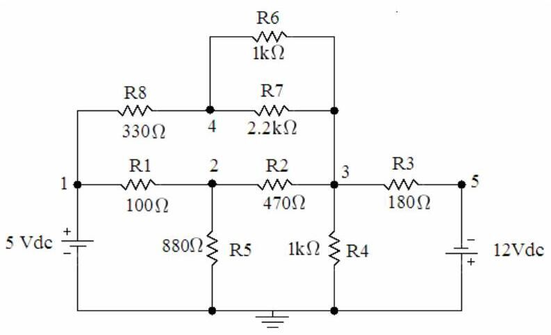
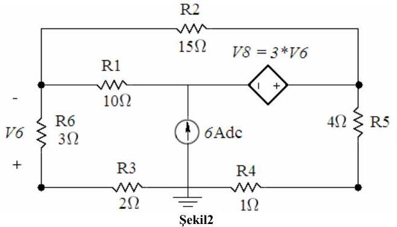
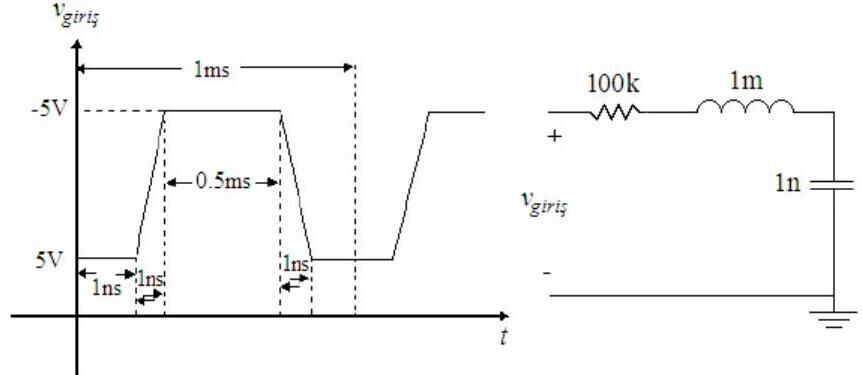
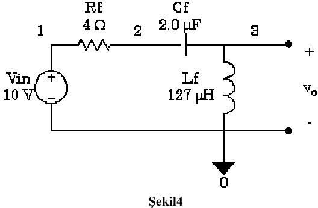

· EEM214
EEM214 Elektronik I: PSpice Çalışması, OrCAD Capture ile Bias Point, DC Sweep, Transient ve AC Analiz
EEM214 – Elektronik I · 04.03.2008 · 16.10.2026
Bu yazı, Başkent Üniversitesi EEM 214 Electronics I dersinde PSpice'ı tanıtmak için verilen Pspice Çalışması föyünü (Mart 2008), laboratuvarda dağıtılan How to add an Include File notunu ve bir öğrencinin 2012'de hazırladığı Türkçe, ekran görüntülü PSpice kullanım notunu bir araya getiriyor. Belgeler yazının sonunda ZIP olarak indirilebilir.
Pspice Çalışması (2008)
1. Bias point ve transient analiz
Şekil 1'deki devrenin şematiğini "OrCAD Capture" programı ile çiziniz. Simülasyonun çalışması için toprak sembolünün adının "0" olmasına dikkat ediniz.

- a. PSpice/New Simulation Profile seçeneğinde "analysis type" olarak Bias Point seçip simülasyonu çalıştırınız.
- b. OrCAD Capture'da "I" ve "V" düğmeleriyle elemanlardan geçen akımları ve düğüm gerilimlerini bulup not ediniz.
- c. PSpice/Edit Simulation Profile ile analiz türünü Time Domain (Transient) yapınız; çalışma süresi 10 s, adım 10 ms seçip eleman gerilimlerinin değişimini gerilim problarıyla gözlemleyiniz.
2. DC sweep
Şekil 2'deki devreyi (bağımlı gerilim kaynağı V8 = 3·V6 ve 6 A'lik bağımsız akım kaynağı içeren) çizip yeni bir simülasyon profili oluşturunuz. Analiz türü DC Sweep, "sweep variable" olarak bağımsız akım kaynağı, lineer tarama: −6 A'den +6 A'e 0.5 A adımlarla. V_R3 ve V_R4 değişimlerini "PSpice A/D" penceresinde elde ediniz.

3. Kare dalga ile transient analiz
Şekil 3'teki devreyi (100 kΩ – 1 mH – 1 nF seri RLC, girişte yükselme ve düşme süreleri 1 ns olan ±5 V, 1 ms periyotlu darbe) çiziniz.

- a. Analiz türü Time Domain (Transient); çalışma süresini ve adım aralığını girişteki kare dalgaya uygun seçiniz. Kondansatör gerilimini R = 100 kΩ, 2 kΩ ve 68 Ω için ayrı ayrı gözlemleyiniz.
- b. Giriş işaretinin periyodunu PER = 0.01 ms, darbe genişliğini PW = 0.005 ms yapıp aynı üç direnç değeri için tekrarlayınız.
4. Parametrik AC sweep
Şekil 4'teki devreyi (V_in = 10 V, R_f = 4 Ω, C_f = 2.0 µF seri, çıkışta L_f = 127 µH) çiziniz. Analiz türü AC Sweep/Noise, seçenek olarak Parametric Sweep; "sweep variable" R_f, lineer 4 Ω'dan 8 Ω'a 2 Ω adımla. Giriş kaynağı VAC (ACMAG = 10 V), AC sweep logaritmik, başlangıç 100 Hz (asla 0 Hz olamaz), bitiş 1 MHz, onkatta 1000 nokta. Frekans tepkisini (DB(v_out/v_in)) R_f = 4, 6 ve 8 Ω için aynı "Probe Window"da elde ediniz.

Not: Bu devre bir seri RLC yüksek geçiren filtredir; rezonans frekansı f₀ = 1/(2π√(L_f·C_f)) = 1/(2π√(127 µH × 2 µF)) ≈ 10 kHz civarındadır ve R_f arttıkça rezonanstaki tepe yayvanlaşır.
Raporda istenenler
- 1.a ve 1.b'de elde edilen sonuçları OrCAD Capture şekli üzerinde gösteriniz.
- 1.c'deki eleman gerilimlerini tablo hâlinde, V_R1, V_R2, V_R3 değişimlerini grafik olarak veriniz.
- 2'de elde edilen V_R3, V_R4 grafiklerini veriniz.
- 3.a ve 3.b'de üç direnç değeri için kondansatör geriliminin değişimini grafik olarak veriniz.
- 4. soruda üç direnç değeri için frekans tepkilerini veriniz.
How to add an Include File
Include dosyaları C'deki başlık (header) dosyaları gibidir: simülasyona her türlü geçerli SPICE kodunu (netlist, uyarım, model) eklemek için kullanılır. Sözdizimi .INC "<filename>"; bu satırla dosyanın içeriği SPICE girdisine eklenir.
- Ana menüden PSpice → New Simulation Profile (ya da var olan profili düzenleyin) seçilip Libraries sekmesine geçilir.
- Model dosyası (örneğin
diode.lib) Browse ile bulunur. Önemli: dosya penceresi varsayılan olarak yalnız.incuzantılı dosyaları gösterir; "tüm dosyalar" seçilmezse.libgörünmez. - Add as Global ile eklenir.
Kütüphane (.olb) eklemek için: Place → Part, Add New Library, ilgili .olb dosyası (örneğin diode.olb) seçilip eklenir. Bu yöntem laboratuvarda BC238B, CD4007 ve föylerle verilen diyot modellerini eklemek için kullanılıyordu.
Öğrencinin PSpice kullanım notu (2012)
Bir öğrencinin ekran görüntüleriyle hazırladığı kısa not şu adımları anlatıyor: File → New → Project ile projeye isim verip Create a blank project seçmek; devreyi kurmak; PSpice → New Simulation ile profil oluşturup "Run to time" alanına süreyi girmek; açılan pencerede Trace → Add Trace ile istenen grafiği seçmek, başka bir grafik için Plot → Add Plot to Window kullanmak; pencere açılmazsa devre ekranındaki çalıştır (play) tuşuna basmak; grafikleri Window → Copy to Clipboard ile kopyalamak ve simülasyondan sonra devre üzerindeki V, I, P düğmeleriyle gerilim, akım ve güçleri görmek.
İndirme
ZIP dosyasında Pspice Çalışması föyünün PDF'i, "How to add an Include File" Word belgesi ve öğrencinin kullanım notunun PDF kopyası bulunuyor.